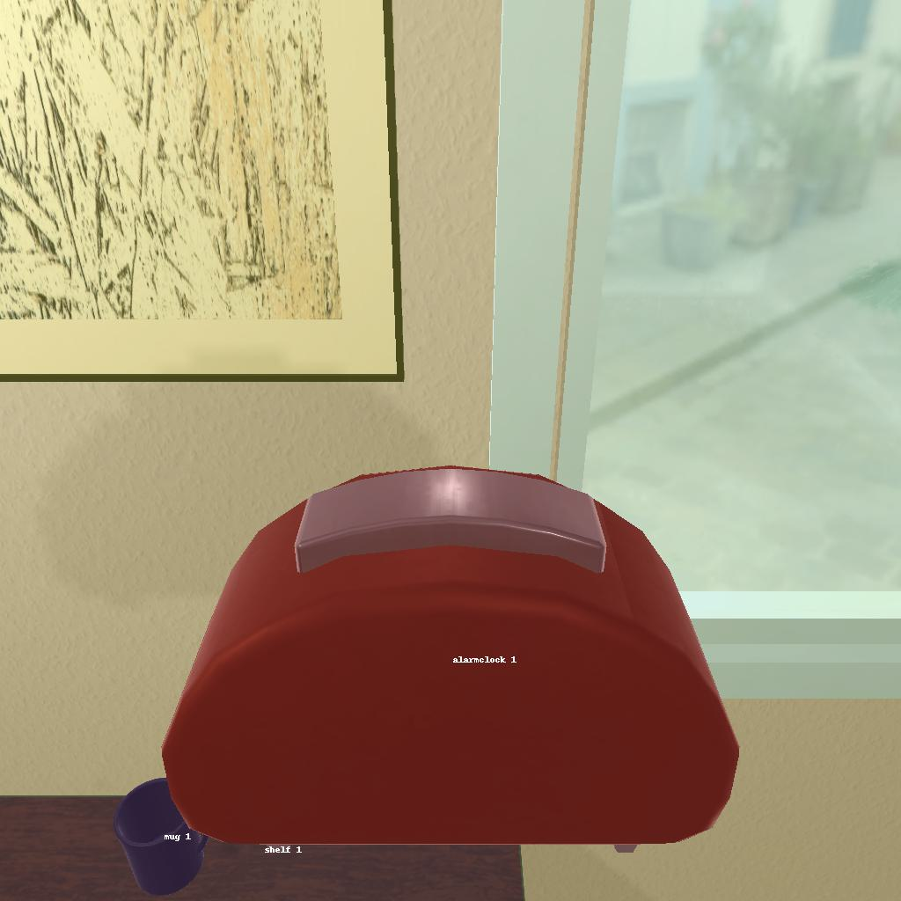

---------------------------------------------------------task: 1---------------------------------------------------------
--------------------------------------------------------------------------------------------------------------------------------------------------------------------
--------------------------------------------------------------------------------------------------------------------------------------------------------------------
Step:--------------------------------------------------------------------------5-------------------------------------------------------------------------------
----------------------------------------
VLM Prompt:
Image1:
**Instruction**
1. Analyze the provided image to identify all visible household objects, focusing on those relevant to the task description "examine the alarmclock with the desklamp."
2. Use the analysis of the image and the task hint "The agent must find an object of the desired type, locate and turn on a light source with the desired object in-hand." to answer the question: what is the most reasonable action in the choices for the task description "examine the alarmclock with the desklamp"?
4. Decide and write the answer using the template: The answer is: (i): , where i is the real number. If there is no desired object in the image, search every place based on **Initial Observation** to find the object. And if no one is exactly correct, choose a similar answer.
**Initial Observation**
You are in the middle of a room. Looking quickly around you, you can see bed (1), dresser (1), drawer (1-10), garbagecan (1), shelf (1-7)
**Answer Choices**
(1): go to bed 1
(2): go to dresser 1
(3): go to drawer 1
(4): go to drawer 2
(5): go to drawer 3
(6): go to drawer 4
(7): go to drawer 5
(8): go to garbagecan 1
(9): go to drawer 6
(10): go to drawer 7
(11): go to drawer 8
(12): go to drawer 9
(13): go to drawer 10
(14): go to shelf 2
(15): go to shelf 3
(16): go to shelf 4
(17): go to shelf 5
(18): go to shelf 6
(19): go to shelf 7
(20): put alarmclock 1 in/on shelf 1
(21): examine alarmclock 1
(22): examine shelf 1
**Answer**
Let's think step by step by following the instructions.
----------------------------------------
----------------------------------------
Original Response:
The task is to examine the alarmclock with the desklamp. From the image, we can see an alarmclock labeled "alarmclock 1" on a surface labeled "shelf 1". There is no desklamp visible in the image. This means we need to find the desklamp to complete the task.
Based on the **Initial Observation**, we have several options to search for objects, which include a bed, a dresser, multiple drawers, a garbage can, and several shelves. Since the task specifically mentions examining the alarm clock with the desklamp, we should first look for the desklamp on the shelves, as lamps are more likely to be placed on shelves in a room.
Given the options, we should start by checking the shelves that have not been observed in the image provided. The image shows "shelf 1", so we can skip that. We should proceed to check the other shelves, starting from "shelf 2" to "shelf 7".
The answer is: (14): go to shelf 2
----------------------------------------
----------------------------------------
>>> Refine Original VLM Response and Get Pure Action: go to shelf 2
----------------------------------------
-----------------------------------------------------------------
Running time: 8.754884004592896 seconds
Total Money: 0.38243000000000005
-----------------------------------------------------------------
-----------------------------------------------------------------
Text Observation:You arrive at loc 14. On the shelf 2, you see a cd 1, a mug 1, and a keychain 1.
-----------------------------------------------------------------
UNSUCCEED